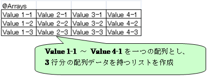
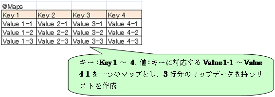
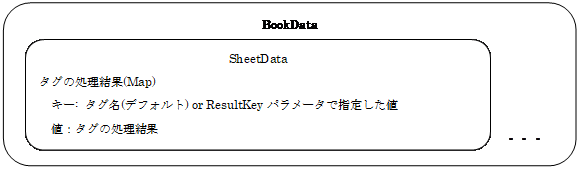
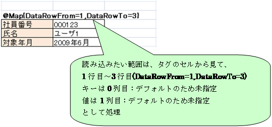
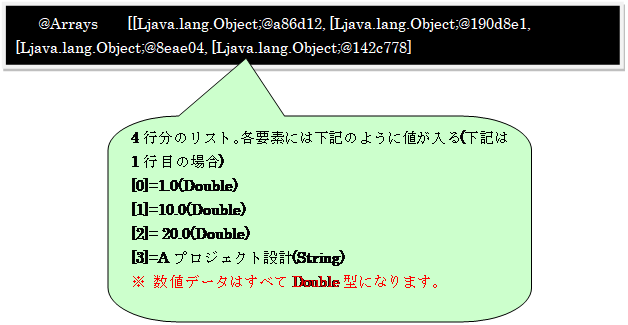
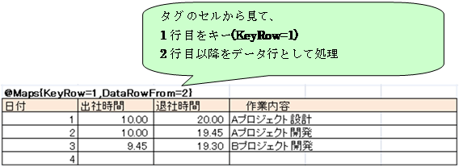
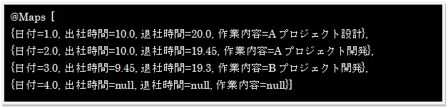
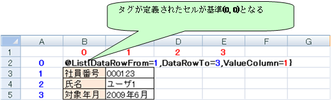
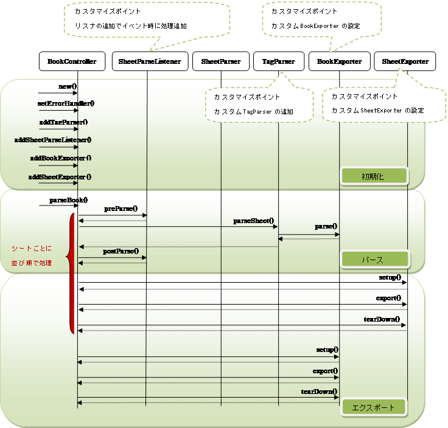

ExCella Coreリファレンスガイド
5.3. カスタムSheetParseListenerの使用
5.3.1. カスタムSheetParseListenerの作成
5.3.2. カスタムSheetParseListenerの追加
ExCella CoreはJavaでExcelファイルを操作するためのフレームワークです。
ExCella Coreを利用することで、Excel上のデータを簡単にJavaから利用できるようになります。
本ソフトウェアはApache License, Version 2.0にて公開しています。
1. ExcelのデータをO/Rマッピングツールを通してRDBMSにインポート
2. Excelのデータを置換して帳票を作成
ExCella Coreフレームワークは大きく、以下のように構成されています。
① コントローラ … Excelファイルのデータ解析から出力までの処理を
制御する部分。BookControllerクラスのこと。
② パーサ … Excelファイルのデータの解析処理を行う部分。
SheetParserとTagParserがある。
l SheetParser … Excelシートのデータを解析し、TagParserを呼び出す。
l TagParser … Excelシート内に記述されたタグ毎にデータを解析する。≪拡張可能≫
③ エクスポータ … 解析結果の出力処理を行う部分。
BookExporterとSheetExporterがある。
l BookExporter … ブック全体の解析結果の出力処理を行う。≪拡張可能≫
l SheetExporter … シート単位で解析結果の出力処理を行う。≪拡張可能≫
※ 標準で、Excel ⇒ Java変換のTagParserと各種Exporterが用意されていますが、
TagParserとExporterを拡張、差し替える事で様々な用途への応用が可能です。
Excelファイルのデータ解析から出力までの大まかな処理の流れを説明します。
より詳細な情報は、5.1. 処理フロー/カスタマイズポイントを参照してください。
1. コントローラがExcelファイルのシート毎にSheetParserを呼び出す。
2. SheetParserがシート内のタグを検査し、タグに応じたTagParserを呼び出す。
3. TagParserが解析処理を実行する。
4. コントローラがエクスポータを呼び出す。
5. エクスポータが解析結果の出力処理を実行する。
パーサはExcelファイルのデータの解析を行う処理クラスです。SheetParserとTagParserがあります。
SheetParserはExcelシートのデータを解析し、TagParserを呼び出すクラスです。
ブックに含まれるシートを先頭から順に、シート内では下図の矢印方向にタグ(※)を検査します。
上記の例では、@Tag1 → @Tag2 → @Tag3の順でタグに対応したTagParserの処理を呼び出し、データを解析します。
タグはTagParserを起動するためにExcelファイル中に埋め込む定義で、
タグ種別(赤字部分)と、パラメータ(青字部分)に分けられ、タグ種別によって実行されるTagParserが決まります。
パラメータ部分は実行時にTagParserに渡され、パラメータによってTagParserの動作を制御します。
なお、タグ種別には任意の文字列を設定することができます。
例）
@List{DataRowFrom=1,DataRowTo=4}
TagParserはExcelファイル中のデータをタグ単位で解析するための処理クラスです。
Excelファイル中に記述されたタグによって呼び出され、タグ種別と関連付けて使用します。
ExCella Coreでは標準TagParserとしてExcel ⇒ Java変換用の下記のTagParserが用意されており、
標準TagParserとExcel上のタグを組み合わせることでJavaへの変換を実現しています。
Ø ListParser … 列方向のセルの値をjava.util.Listに変換します。
Ø MapParser … 列方向のセルの値の組み合わせ(Key, Value)を、java.util.Mapに変換します。
Ø ArraysParser … java.util.List<Object[]>へと変換します。(Object[]は一行分のデータ)

Ø MapsParser … java.util.List<Map>へと変換します。(Mapは一行分のデータ)

Ø ObjectsParser … java.util.List<Object>へと変換します。(Objectは1行分のデータ)
上記の標準TagParserで対応できない場合は、独自のカスタムTagParserを追加することができます。
詳細は5.2. カスタムTagParserの使用を参照してください。
エクスポータはパーサを利用して解析した結果を出力するための処理クラスです。
BookExporterとSheetExporterがあります。
ブック単位で任意の出力処理を差し込むためのインターフェイスです。
標準で、下記のBookExporterが用意されています。
Ø ConsoleExporter … コンソールへの出力
Ø TextFileExporter … ファイルへの出力
Ø WorkbookExporter … ワークブックへの出力
上記の標準BookExporterで対応できない場合は、独自のカスタムBookExporterを追加することができます。
詳細は5.4. カスタムBookExporterの使用を参照してください。
シート単位で任意の出力処理を差し込むためのインターフェイスです。
シート単位で出力処理を切り替えたい場合に使用します。
標準で、下記のSheetExporterが用意されています。
Ø ConsoleExporter … コンソールへの出力
Ø TextFileExporter … ファイルへの出力
上記の標準SheetExporterで対応できない場合は、独自のカスタムSheetExporterを追加することができます。
詳細は5.5. カスタムSheetExporterの使用を参照してください。
解析結果は解析処理後にBookControllerからBookDataとして取得でき、以降は自由に利用することができます。
BookDataはシート数分のSheetDataを含み、SheetDataはシート内のタグの処理結果をMapで保持します。
Mapのキーはデフォルトではタグ名、ResultKeyパラメータを指定した場合は指定値になります。
Mapの値にはタグの処理結果が入ります。

|
BookController controller = new BookController( args[0]); ： controller.parseBook();
// 結果の取得 BookData bookData = controller.getBookData(); // シートデータリストの取得 Collection<SheetData> sheetDatas = bookData.getSheetDatas(); for ( SheetData sheetData : sheetDatas) { // 任意の処理 } |
それではExCella Coreを利用して下記の様なExcelの勤務表を取り込む場合の手順を見ていきます。
※ ここで紹介するプログラムおよびテンプレートはサンプル(org.bbreak.excella.core.samples. WorkFactReportReader)に含まれています。
なお、説明上、タグ行は表示状態で記載していますが、Excel上でタグ行を非表示にしても処理は可能です。
社員番号～対象年月部分までを読み込む方法について説明します。
このように列にデータが並んでいる場合は
l ListParser
l MapParser
の2種類の標準TagParserが利用できます。
下記のようにExcelファイルのヘッダ部分にタグ(@List)を埋め込みます。
タグ中で使用しているパラメータの詳細は、3. 標準TagParser仕様を参照してください。
“@List”タグにListParserを対応付けて追加します。
また、結果をコンソールに出力するために、ConsoleExporterを追加します。
|
BookController controller = new BookController( args[0]); // 標準TagParserの追加 controller.addTagParser( new ListParser( "@List")); // 結果をコンソールに出力 controller.addBookExporter( new ConsoleExporter()); // 解析の実行 parser.parseBook(); |
Ø 実行結果
ListにDataRowFrom～DataRowToまでのデータが追加されていることが確認できます。
MapParserを使用すると、キーと値の組み合わせでデータを取得できます。
また、データの順序はキーが追加された順序を保持します。
下記のようにExcelファイルのヘッダ部分にタグ(@Map)を埋め込みます。

“@Map”タグにMapParserを対応付けて追加します。
|
BookController controller = new BookController( args[0]); // 標準TagParserの追加 controller.addTagParser( new MapParser( "@Map")); // 結果をコンソールに出力 controller.addBookExporter( new ConsoleExporter()); // 解析の実行 controller.parseBook(); |
Ø 実行結果
MapにDataRowFrom～DataRowToまでのデータ（キー、値）が追加されていることが確認できます。
続いて明細部分の読み込みを行います。
明細部分のような一連のデータを扱う場合には
l ArraysParser
l MapsParser
l ObjectsParser
の3種類の標準TagParserが利用できます。
下記のようにExcelファイルのヘッダ部分にタグ(@Arrays)を埋め込みます。
“@Arrays”タグにArraysParserを対応付けて追加します。
|
BookController controller = new BookController( args[0]); // 標準TagParserの追加 controller.addTagParser( new ArraysParser( "@Arrays")); // 結果をコンソールに出力 controller.addBookExporter( new ConsoleExporter()); // 解析の実行 controller.parseBook(); |
Ø 実行結果(4行分のリスト)

下記のようにExcelファイルのヘッダ部分にタグ(@Maps)を埋め込みます。

“@Maps”タグにMapsParserを対応付けて追加します。
|
BookController controller = new BookController( args[0]); // 標準TagParserの追加 controller.addTagParser( new MapsParser("@Maps")); // 結果をコンソールに出力 controller.addBookExporter( new ConsoleExporter()); // 解析の実行 controller.parseBook(); |
Ø 実行結果(見やすいように加工してあります)

下記のようにExcelファイルのヘッダ部分にタグ(@Objects)を埋め込みます。
“@Objects”タグにObjectsParserを対応付けて追加します。
|
BookController controller = new BookController( args[0]); // 標準TagParserの追加 controller.addTagParser( new ObjectsParser("@Objects")); // 結果をコンソールに出力 controller.addBookExporter( new ConsoleExporter()); // 解析の実行 controller.parseBook(); |
Ø 実行結果(見やすいように加工してあります)
全ての標準TagParserが理解するパラメータ情報です。
|
パラメータ |
定義例 |
必須/任意 |
説明 |
|
DataRowFrom |
@List{DataRowFrom=1} |
任意 |
タグが定義されたセルから見て何行目からデータ行が開始するか。 未指定の場合はそれぞれのタグのデフォルト値を適用する。
≪デフォルト値≫ ・@List … 1 ・@Map … 1 ・@Arrays … 1 ・@Maps … 2 ・@Objects … 2 |
|
DataRowTo |
@List{DataRowTo=1} |
任意 |
タグが定義されたセルから見て何行目までをデータ行として処理を行うか。 未指定の場合は、シートの最終行（Apache POIのSheet.getLastRowNum()の取得値）までをデータ行とみなす |
|
ResultKey |
@List{ResultKey=UserList} |
任意 |
処理結果に対応するキー。 未指定の場合はタグ種別が使用される。 |
※ パラメータで指定する行・列の数値はタグが定義されたセルを基準（0, 0）とし、そのセルから見たときの相対値で表します。

ListParserが理解するパラメータ情報です。
|
パラメータ |
定義例 |
必須/任意 |
説明 |
|
ValueColumn |
@List{ValueColumn=1} |
任意 |
タグが定義されたセルからみて何列目を値として使用するか。 未指定の場合は0 |
MapParserが理解するパラメータ情報です。
|
パラメータ |
定義例 |
必須/任意 |
説明 |
|
Key |
@Map{Key=XXX} |
任意 |
キーに固定文字列を使用する場合に指定。 |
|
Value |
@Map{Value=YYY} |
任意 |
値に固定文字列を使用する場合に指定。 |
|
KeyColumn |
@Map{KeyColumn=1} |
任意 |
タグが定義されたセルからみて何列目をキーとして使用するか 未指定の場合は0 |
|
ValueColumn |
@Map{ValueColumn=2} |
任意 |
タグが定義されたセルからみて何列目を値として使用するか 未指定の場合は1 |
|
KeyCell |
@Map{KeyCell=1:1} |
任意 |
タグが定義されたセルから見て何行、何列目のセルをキーとして使用するか。 |
|
ValueCell |
@Map{ValueCell=1:2} |
任意 |
タグが定義されたセルから見て何行、何列目のセルを値として使用するか。 |
※ Key, KeyColumn, KeyCellの2つ以上が定義されていた場合は不正な定義としてParseExceptionがThrowされます
※ Value, ValueColumn, ValueCellの2つ以上が定義されていた場合は不正な定義としてParseExceptionがThrowされます
ArraysParserが理解するパラメータ情報です。
|
パラメータ |
定義例 |
必須/任意 |
説明 |
|
DataColumnFrom |
@Arrays{DataColumnFrom=1} |
任意 |
セルから見て何列目からをデータとして使用するか。 未指定の場合は1 |
|
DataColumnTo |
@Arrays{DataColumnTo=4} |
任意 |
セルから見て何列目までをデータとして使用するか。 未指定の場合は最終列まで。 |
MapsParserが理解するパラメータ情報です。
|
パラメータ |
定義例 |
必須/任意 |
説明 |
|
KeyRow |
@Maps{KeyRow=1} |
任意 |
タグが定義されたセルから見て何行目をキーとするか 未指定の場合は1 |
ObjectsParserが理解するパラメータ情報です。
|
パラメータ |
定義例 |
必須/任意 |
説明 |
|
Class |
@Objects{Class=org.***} |
必須 |
Listに詰めるオブジェクトのクラス。 |
|
PropertyRow |
@Objects{PropertyRow=1} |
任意 |
タグが定義されたセルからみて何行目をプロパティ行として使用するか 未指定の場合は1 |
※ プロパティ名の先頭を"-"にするとコメントとみなされ処理対象外になります。
ObjectsParserでは単純にオブジェクトに対してプロパティを設定するだけでなく、
特定のプロパティ(カスタムプロパティ)に対して任意の処理を差し込む事ができます。
カスタムプロパティも通常のタグと同様にプロパティ行(PropertyRowで指定した行)のプロパティ名を
任意のタグで記述し、タグに対応するプロパティパーサを追加するとパーサの処理が実行されます。
Excel定義
カスタムプロパティパーサの追加
|
BookController controller = new BookController( args[0]); // Objectsパーサの生成 ObjectsParser objectsParser = new ObjectsParser( "@Objects"); // カスタムプロパティパーサの追加 objectsParser.addPropertyParser( new CustomPropertyParser( "@CusotmProperty")); // パーサの追加 controller.addTagParser( objectsParser); // 解析の実行 controller.parseBook(); |
パース時に何らかのエラーが発生した際に、デバッグ用のエラーハンドラを設定しておくと、
エラー情報の追加されたExcelファイルが実行ディレクトリ直下に出力されます。
エラーとなったセルが特定可能な場合はエラーのセルの背景色が赤色になっていますので、
こちらのファイルを参照すると原因が特定できる可能性があります。
|
BookController controller = new BookController( args[0]); // デバッグ用エラーハンドラの設定(エラー時はエラーファイルを作成) controller.setErrorHandler( new DebugErrorHandler()); |
例）エラーファイル
※Ver1.4からセルコメントとして詳細なエラー内容が表示されるようになりました。(xlsのみ)
本章ではExCella Coreをカスタマイズする開発者向けの技術情報を紹介します。

独自の解析処理を実現する場合には、TagParserを継承したクラスを作成し、任意のタグと関連付けて使用します。
例として、解析結果をList<String>で返すCustomTagParserを作成してみます。
TagParserを継承し、オーバーライドしたparseメソッドに解析処理を記述し、戻り値の型を
List<String>型にします。ここで返却したデータが解析結果データとしてSheetDataに格納されます。
|
public class CustomTagParser extends TagParser<List<String>> { /** * コンストラクタ * @param tag タグ */ public CustomTagParser( String tag) { super( tag); }
/** * パース処理 * @param sheet 対象シート * @param tagCell タグが定義されたセル * @param data BookControllerのparseBook(), parseSheet()メソッド、 * SheetParserのparseSheetメソッドで引数を渡した場合に * TagParserまで引き継がれる処理データ * @return 解析結果 * @throws ParseException パース例外 */ @Override public List<String> parse( Sheet sheet, Cell tagCell, Object data) throws ParseException { List<String> result = new ArrayList<String>(); // 解析処理を記述 ： ： // 解析結果を返す return result; } } |
上記で作成したCustomTagParserを“@Custom”タグに関連付けます。
全てのシートでCustomTagParserを使用する場合
|
BookController controller = new BookController( args[0]); // @CustomタグにCustomTagParserを関連付ける controller.addTagParser( new CustomTagParser( "@Custom")); ： ： controller.parseBook(); |
Sheet1のみでCustomTagParserを使用する場合
|
BookController controller = new BookController( args[0]); // Sheet1の@CustomタグにCustomTagParserを関連付ける controller.addTagParser( "Sheet1", new CustomTagParser( "@Custom")); ： ： controller.parseBook(); |
解析処理の実行前後に任意の処理を実行する場合には、SheetParseListenerを実装したクラスを作成し、BookControllerに追加して使用します。
例として、解析処理の実行前と実行後にコンソールに文字列を出力するCustomParseListenerを作成します。
SheetParseListenerを実装し、preParse()、postParse()にそれぞれコンソールに文字列を出力する処理を記述します。
postParse()では、引数で渡されるsheetDataを使用して、解析結果データに対して処理を行うことができます。
|
public class CustomSheetParseListener implements SheetParseListener { /** * 解析処理前に実行する処理 * @param sheet 対象シート * @param sheetParser シートパーサ * @throws ParseException パース例外 */ public void preParse( Sheet sheet, SheetParser sheetParser) throws ParseException { System.out.println( "preParseの実行"); }
/** * 解析処理後に実行する処理 * @param sheet 対象シート * @param sheetParser シートパーサ * @param sheetData解析結果データ * @throws ParseException パース例外 */ public void postParse( Sheet sheet, SheetParser sheetParser, SheetData sheetData) throws ParseException { System.out.println( "postParseの実行"); } } |
上記で作成したCustomSheettParseListenerをBookControllerに追加します。
全てのシートでCustomSheetParseListenerを使用する場合
|
BookController controller = new BookController( args[0]); // CustomSheetParseListenerをブックに追加 controller.addSheetParseListener ( new CustomSheetParseListener ()); ： ： controller.parseBook(); |
Sheet1のみでCustomSheetParseListenerを使用する場合
|
BookController controller = new BookController( args[0]); // CustomSheetParseListenerをブックに追加 controller.addSheetParseListener ( "Sheet1", new CustomSheetParseListener ()); ： ： controller.parseBook(); |
ブック単位で独自の出力処理を実現する場合には、BookExporterを実装したクラスを作成し、BookControllerに追加して使用します。
例として、コンソールに文字列を表示するCustomBookExporterを作成してみます。
BookExporterを実装し、setup()メソッド、export()メソッド、tearDown()メソッドにそれぞれ処理を記述します。
|
public class CustomBookExporter implements BookExporter { /** * 初期化処理 */ public void setup() { System.out.println( "初期化処理の実行"); }
/** * 出力処理 * @param book ワークブック * @param bookdata ブック単位の解析結果データ * @throws ExportException 出力処理例外 */ public void export( Workbook book, BookData bookdata) throws ExportException { // コンソールにsheetdataの内容を表示 Collection<SheetData> sheetDatas = bookdata.getSheetDatas(); for ( SheetData sheetdata : sheetDatas) { System.out.println( sheetdata.toString()); } }
/** * 終了処理 */ public void tearDown() { System.out.println( "終了処理の実行"); } } |
上記で作成したCustomBookExporterをBookControllerに追加します。
CustomBookExporterを使用する場合
|
BookController controller = new BookController( args[0]); // Exporterをブックに追加 controller.addBookExporter( new CustomBookExporter()); ： ： controller.parseBook(); |
シート単位で独自の出力処理を実現する場合には、SheetExporterを実装したクラスを作成し、BookControllerに追加して使用します。
例として、コンソールに文字列を表示するCustomSheetExporterを作成してみます。
SheetExporterを実装し、setup()メソッド、export()メソッド、tearDown()メソッドにそれぞれ処理を記述します。
|
public class CustomSheetExporter implements SheetExporter { /** * 初期化処理 */ public void setup() { System.out.println( "初期化処理の実行"); }
/** * 出力処理 * @param sheet シート * @param sheetdata シート単位の解析結果データ * @throws ExportException 出力処理例外 */ public void export( Sheet sheet, SheetData sheetdata) throws ExportException { // コンソールにsheetdataの内容を表示 System.out.println( sheetdata.toString()); }
/** * 終了処理 */ public void tearDown() { System.out.println( "終了処理の実行"); }
|
上記で作成したCustomSheetExporterをBookControllerに追加します。
Sheet1でCustomSheetExporterを使用する場合
|
BookController controller = new BookController( args[0]); // Sheet1の解析結果を処理するExporterをシートに追加 controller.addSheetExporter( "Sheet1", new CustomSheetExporter()); ： ： controller.parseBook(); |
カスタマイズに利用できるユーティリティクラスを紹介します。ユーティリティクラスはorg.bbreak.excella.core.util下にあります。
POI操作のユーティリティクラスです。
セルの値をセルのタイプに応じた型で取得するメソッドやセルに値をセットするメソッド等、POI操作関連のメソッドが用意されています。
より詳細な情報は、ExCella CoreのJavadocを参照してください。
タグ定義操作のユーティリティクラスです。
タグ定義からパラメータ部分をマップ型で取得するメソッドやタグ定義からパラメータ部分を除いた文字列を取得するメソッド等、タグ操作関連のメソッドが用意されています。
より詳細な情報は、ExCella CoreのJavadocを参照してください。